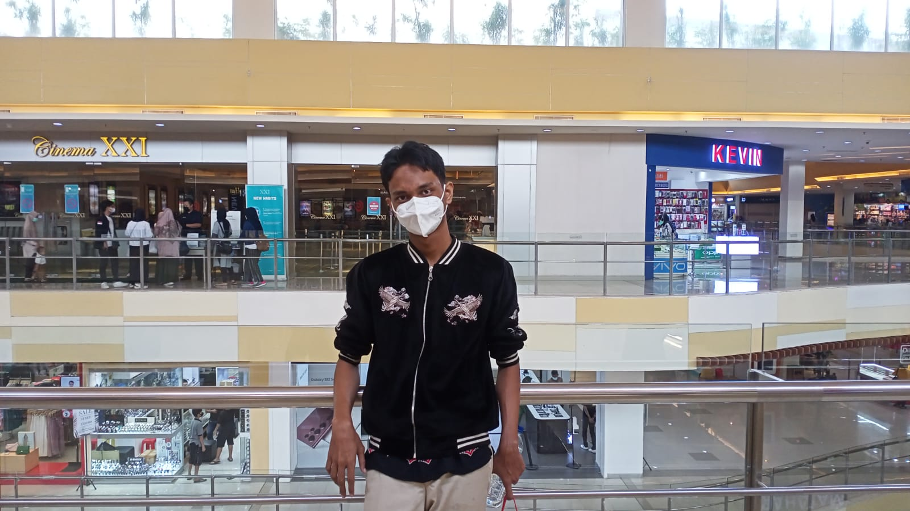

MY CURRICLUM VITAE

Biodata
Nama : Rafi Ilyas Ramadani
Tempat,tgl lahir : Jakarta 07-11-2004
Alamat : Per Polonia Rw/Rt 015/006,
gender : laki laki
hobi : main game,bermain basket
agama : islam
PENDIDIKAN FORMAL
SD Cipinang Cempedak 06 Jakarta Timur : 2010-2016
SMP Kartika X-1 : 2016-2019
SMK Budi Warman 1 Jakarta Timur : 2019-2022
Pengalaman
PKL di SMK Budi Warman 1 Jakarta Timur selama 3 bulan.